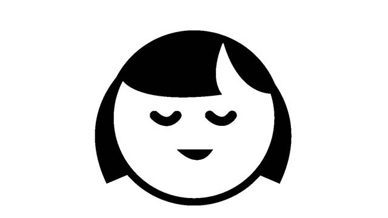

一つ皆さんにお聞きします。
「あなたは自分のことが好きですか？」
「自分のことを愛しているとハッキリ言えますか？」
何となく微妙な空気が伝わってきます(笑)
質問の角度を変えます。
「あなたは日頃自分に十分敬意を払っているでしょうか?」あるいは
「自分を労わっていますか？」
今日も1日色々なことがあり、－忙しく仕事をこなしたり済ませるべき要件を果たしたり、－そのつど感情が揺らいだり神経を酷使する場面もあったでしょう。
それでも何とか大過なく過ごすことができた。
そんな「頑張った自分」に感謝したり労わったりしているでしょうか。
私は冗談まじりに人に「自分のこと好きですか」と聞くことがあります。
「ハイ。好きです」と答える人もいますが非常に稀です。
たいていは微妙な反応（!？）が返ってきます。
「う～ん・・・嫌いとかじゃないけど好きとまでは・・・」
「あまり考えたことないけど、どっちかというと好きじゃないかも」
というのが多く、中には「好きになれない」
「キライ」と答える人もいます。
どちらかというと自分のことをあまり好きじゃないが過半な気がします。
どうしてでしょう？
自己肯定感が乏しいからでしょうか。
それとも自分を愛してるとか自己を肯定しすぎることは傲慢であり、エゴイスティックな印象をもたれると考えているのでしょうか。
ここで１つ指摘しておくなら、人生がうまくいかない人は「自分を嫌っている」「自分を許せない」と考えている人が多いということです。
「今のお前はダメだ」というメッセージ
ところで私たちは以下の考えを自然に受け入れて暮らしています。
「目的や理想を目指して努力することは大切」
「一生けん命勉強して知識を蓄え上を目指すべき」
「現状に甘んずることなく改良、改善し、常に前進していく必要がある」
私も基本的にはこれらの考えには賛成します。常に理想を求めて努力すること。そのためには現状にあぐらをかくのではなく、改善し改革する姿勢をもつこと。
確かに社会や人間生活の進歩にとっては欠かせない要素です。常識といって良いでしょう。
しかし、これらの常識には光と影があります。
これらの進歩主義的人生観、努力至上主義の考え方の根底には、現状否定もっと言うなら自己否定の発想があるからです。
一見ものごとが改良され豊かになり便利になったとしても、出発点が自己否定ならどこまで行っても幸福感は得られない。
土台に現状否定、自己否定があるからです。
私たちは子どものころから、ある意味で「今の自分」を否定されながら育ってきました。
良いことをしてホメられるより悪いことをして叱られることのほうが多かったり、学校の成績でもたとえば「英語ができた」としても「数学はできてない」と責められ、好きなこと―ゲームやマンガ、時には読書や趣味―に熱中しようとしても「好きなことばかりやっても将来のためにならない。今は勉強でしょ!」などと叱責されてきました。
こうして私たちは親や先生（大人）からある重要なメッセージを伝えられてきました。
そのメッセージとは「私たちは好きなことをしてはいけないのだ」ということであり、さらには「大人の期待にこたえられない自分は良い子じゃない」というものです。いずれにせよ「今のお前はダメだ」という否定です。
つまり「いまこの瞬間」を否定しているわけで、今この瞬間を否定している以上どこまでいっても「肯定されるべき未来」にはたどり着けません。
なぜなら時間というものは常に「今この瞬間」が連なったものとしてしか経験できないからです。「未来」がやって来てもそのときはやはり「今」としか経験できないはずです。
「今」を否定すると不幸になる
要するに進歩主義的人生観に囚われている限り、どこまで行っても私たちは現状否定、自己否定の闇から抜け出せないということです。
私たちはいつまでも自分を嫌い続けるしかない。今の自分はまだまだダメだと反省し続けるしかないのです。
「○○が達成されないと自分を認められない」
「○○ができない自分を受け入れるわけにはいかない」
「こんなこともできないなんて自分を許せない」
こうして私たちは自分を受け入れ、自分を愛し自分を許すことを先延ばし続けるのです。
いつか来る未来の「理想の瞬間」まで。
しかしそのような「栄光の未来」はやって来ません。
たとえ目標を達成しても嬉しいのは一瞬だけで、次の瞬間にはまた新たなゴールを目指して頑張り続けるしかない。本当の満足感や幸福感はなかなか得られないのです。
なのでその代わり私たちは他者からの評価を求め続けるのです。「せめて努力だけでも認めて欲しい」「頑張っている自分を分かって欲しい」と。
そしてそれが得られないと激しく落ち込みます。
もちろんこれでは何の問題解決にもなりません。
他者に自分の評価を委ねる以上、自らの力を他者に明け渡しコントロールされる「非力な存在」であると宣言するに等しいからです。
こうなるといくら頑張っても、何かを達成しても虚しさは失くならず自己不全感や「自分は評価されていない」という不幸感は残り続けます。生きる喜びや充実感も失せていく。
ここから脱出するにはいくつかの対処法があります。
私の考え方では以下の２点をまずしっかり認識することです。
1.「今より将来が大事」という常識の嘘を見破り自己肯定感を取り戻す
2.自分の特質を思い出しそれを取り入れる
自己否定を解除する法
将来に備えて努力する。未来の繁栄（幸せ）のために今を我慢する。
これらは１９世紀～20世紀にかけて作り上げられた産業社会を支える考え方であり、経済的（物質的）豊かさこそが幸福であるという信念の反映です。
しかし、物質的に豊かになり常に生存の不安に脅かされているわけではない今の時代において、上のような考え方は不必要というよりむしろ有害になっているのです。
「将来のために今を耐える」という発想は、今を犠牲にすることを意味し、今を否定し今の自分を認めないことにつながるからです。
そして「今の自分を否定」することはこれから先もずっと自己を嫌悪し続けていくことになるからです。人生の質をおとしめるライフスタイルといえます。
だからこの自己嫌悪や自己否定感を抱えている人たちは、まずこの「否定感」は幼いころから親など大人によってつまり社会によって大部分は強いられたもの、文化的に条件づけられたものだということを知ることが大事です。
つまりある種のプログラムだということです。
だから「今のお前ではダメだ」という刷り込まれた現状否定の暗黙のプログラムは解除すべきです。
つまりこういうことです。
「あなたの自己否定感は解除できる」
「なぜならそれはプログラムされたものだから」
そう知った上で少しずつ「今の自分」を受け入れてみることです。どうやって？
たとえば以下のワークをやってみて下さい。
軽く目をつぶって下さい。
「今」の自分を感じてみましょう。昨日の自分でも明日の自分でもなく、1分前の自分でもなく1分後の自分でもない今この瞬間の自分です。今の自分を感じて下さい。時計の指す水平的時間ではなく、自分の内部の奥深くへ降りていく垂直的な時間の「いま」です。
そこにいて下さい。過去の記憶や未来への思いが存在しない自分の内部にある今です。
少しの間そこにとどまって下さい。
今この瞬間に包まれてくつろぐことはできるでしょうか。
何なら自分の身体を感じてみましょう。
呼吸はどうですか。深いですか浅いですか。
心臓の動きは感じられますか。皮膚は温度を感じているでしょうか。足先から頭頂まで全身を順番に意識してみましょう。細胞に至るまで生命を感じることはできますか。
さて今この瞬間、あなたの中に不安、不満、心配、足りないものはあるでしょうか。
あなたは色々ありながらも毎日精いっぱい頑張ってきて今この瞬間こうして生きています。
今この瞬間生きているということは、存在する価値があるからに他なりません。そうでなければ生きていないでしょう。
今この瞬間にくつろいでいると、ここには絶対的安心感があることが分かります。「今」に不足はないからです。
子どものころ、時間を忘れて遊びや好きなことに夢中になっていたときそこに不安や心配そして自己嫌悪はありませんでした。
幼い子どもは「今」にいるからです。不安や心配は過去や未来を思いわずらう時にしか存在しないからです。
今、自分を愛するだけでいい
夢中になって遊んでいた子どものころ、あなたは愛であふれていたことでしょう。全てを愛し全てから愛されていた。世界は愛に満ちていた。
空を焦がす夕焼けにも、草むらを這う虫一匹にも、頬を濡らす雨粒にも愛と神秘を感じ生命の躍動感を覚えていた。世界は黄金色に輝いていたのなら、それはあなたが輝いていたから。
あなたが愛にあふれていたからです。
私はノスタルジーに浸れと言っているのではありません。ある意味それこそが本当のあなただと言いたいのです。
「今」を否定していなかった、自己を否定していなかったときのあなたこそが実際のあなた。本当のあなたの姿だということです。
自分を否定しない（否定しなければ自動的に受け入れていることになる）だけで人生はずっと生きやすくなります。
さらに自分を認め愛したら世界もあなたを受け入れ愛を返してくる。
自分を認め愛することに条件はいりません。
「○○したら自分を認められるのに」というのは条件つきの愛であり、未来への期待であって「今」への否定です。
本当の幸福は、今の自分を認め受け入れ愛するところにしか存在しません。今の自分を肯定することからスタートするしかないのです。
いっとき流行したことばを使うなら「ありのままの自分」をまず肯定することです。
真の意味で自分を肯定し、ありのままを認めている人は他をも肯定し認めることができます。
同じく自分を愛している人は他を愛することができます。自分が幸せな人は他を幸せにすることもできるのです。
これは、自分が愛に満ちているからそれが周囲にあふれ出し、自ずと他を幸せにするというのが正解かも知れません。
まず自分から始めよということです。
「自分を愛すると世界は変わる」
これは本当です。ぜひ実践してみて下さい。
（次回に続く）